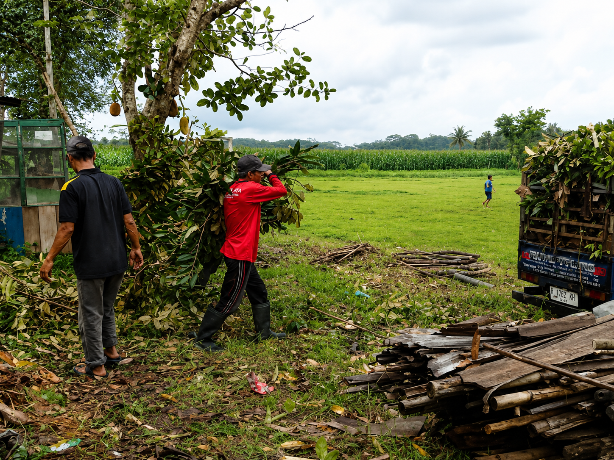
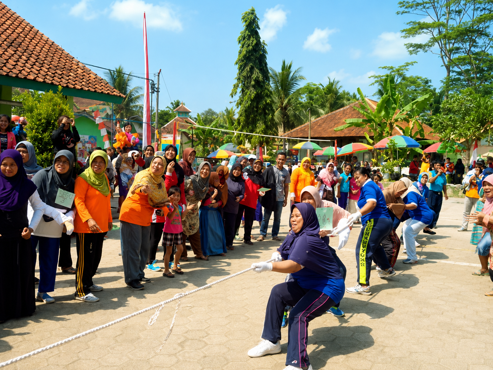
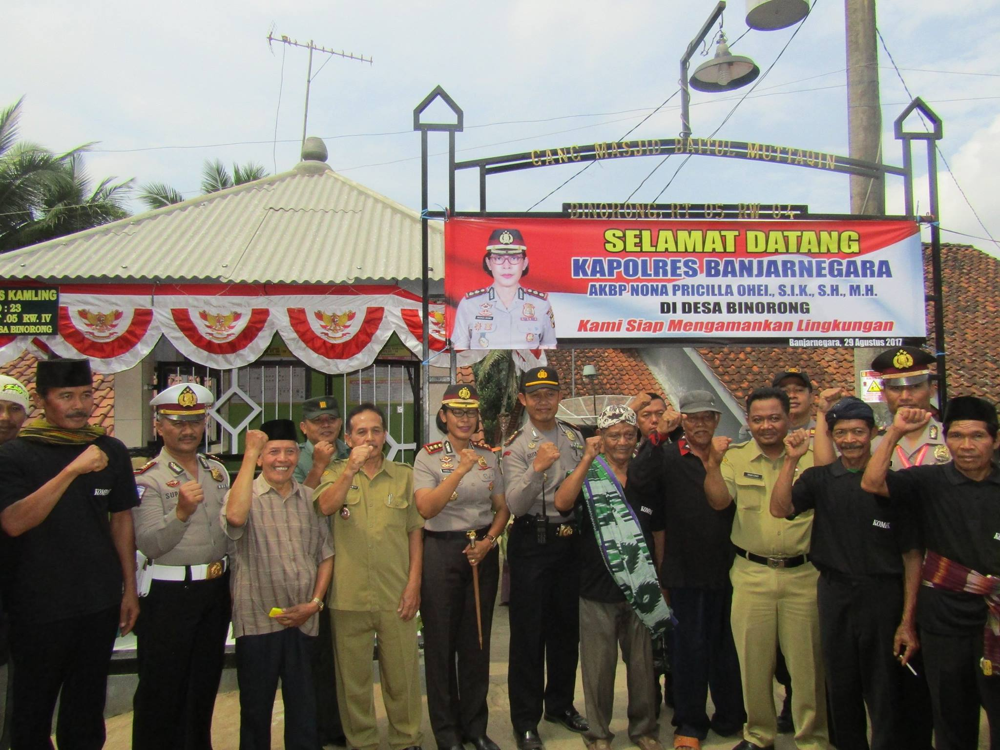
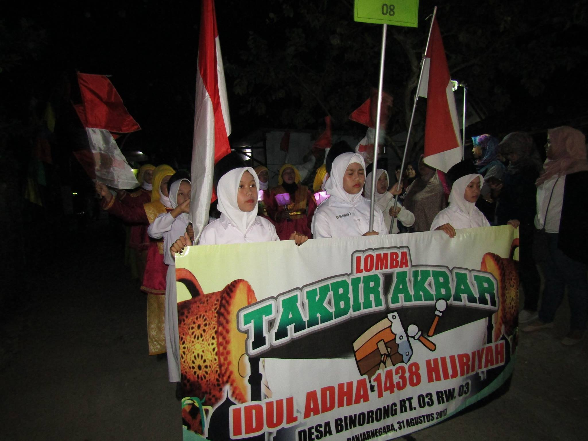
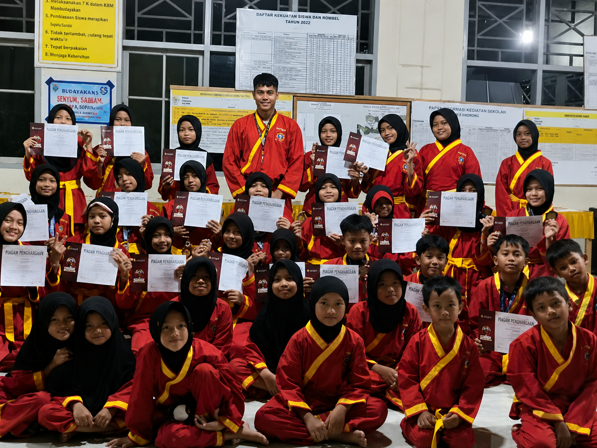
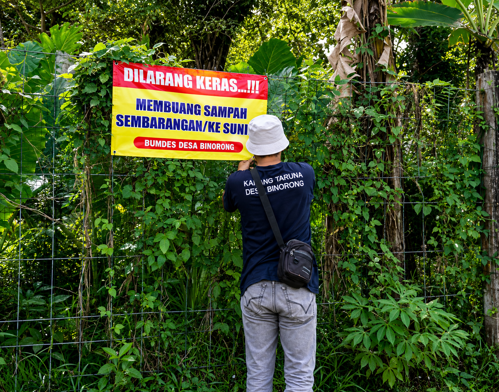
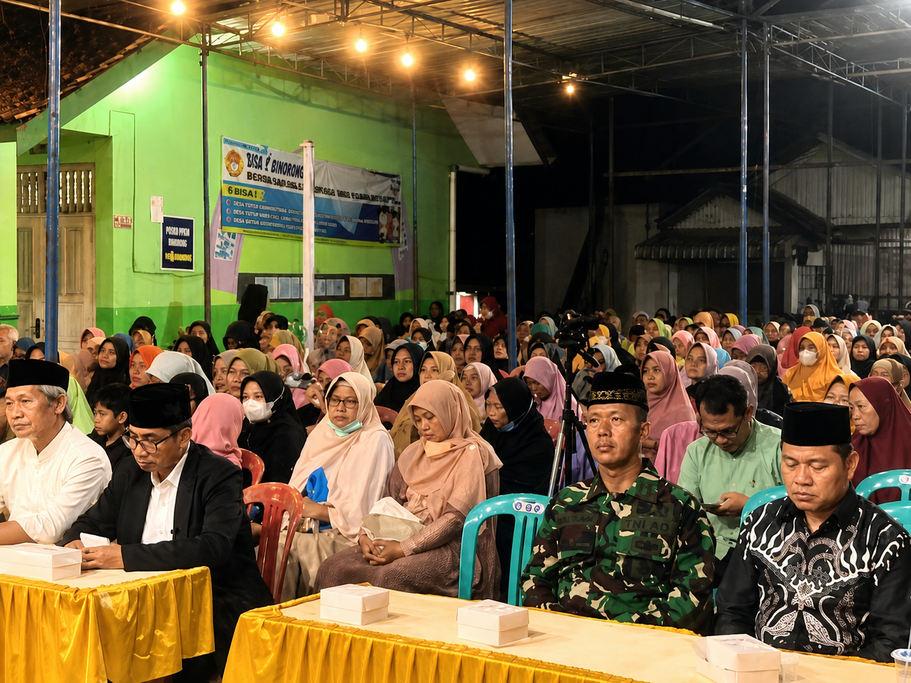
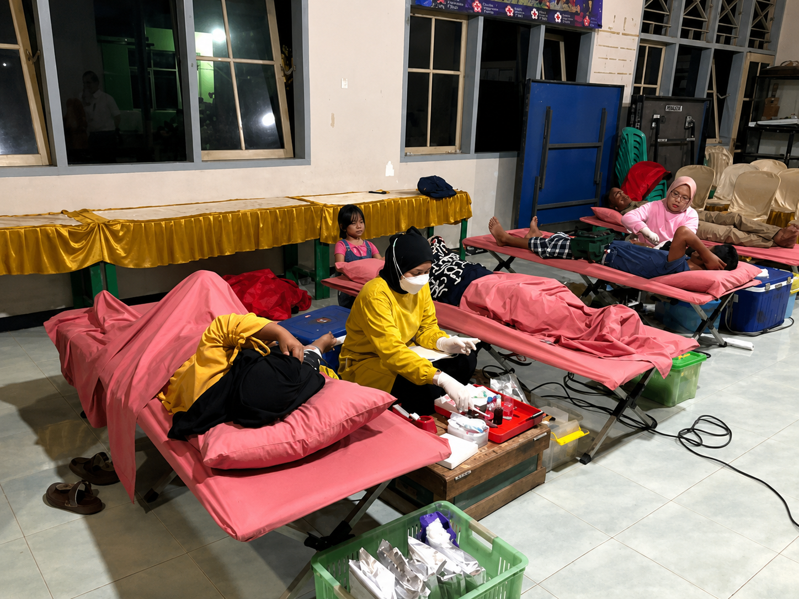
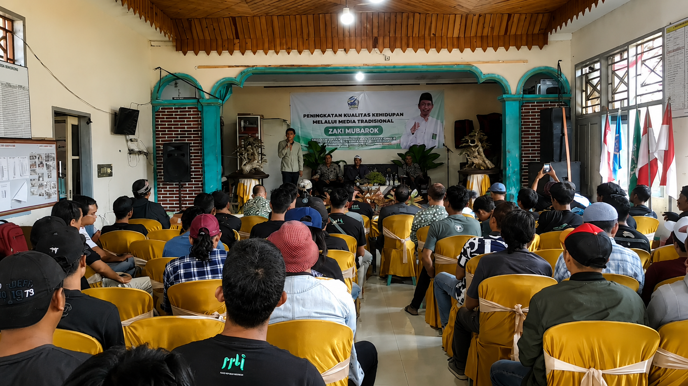

GALERI DOKUMENTASI DESA
-- Galeri kegiatan, musyawarah, dan perayaan di lingkungan Desa Binorong --

Tim Karang Taruna Desa Binorong kompak melaksanakan kerja bakti normalisasi lapangan Lima Oktober.

Keseruan Perlombaan Antar-Warga Desa Binorong Sebagai Wujud Nyata Guyub Rukun dan Solidaritas Masyarakat.

Kegiatan Kaposkampling dalam rangka meningkatkan kesadaran dan partisipasi masyarakat dalam Harkamtibmas.

Kemeriahan dan antusiasme warga dalam mengikuti takbir keliling sebagai bentuk syiar islam pada Hari Raya Idul Adha.

Penyerahan medali dan sertifikat KEJURDA tapak suci VIII 2024 | Tapak Suci Putera Muhammadiyah Binorong.

Pemasangan plang dilarang membuang sampah ke sungai dan sekitar pemukiman demi mewujudkan lingkungan sehat.

Suasana kegiatan pengajian akbar dalam rangka tahun baru Hijriah ke 1444 di balai desa Binorong.

Kegiatan donor darah rutin dan pendonor darah baru dari program kerja rutin karang taruna desa binorong.

Sosialisasi pelestarian kesenian tradisional Banjarnegara bersama Anggota DPRD Jawa Tengah, Zaki Mubarok.